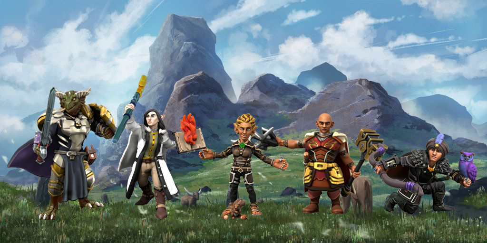

Welcome! We are Fyfe's Five, a freelance adventuring party that offers services to clients that need a group of explorers.
Each member of the team brings their own unique experience and skillset to every mission we encounter.
Our portfolio contains a list of missions we have accomplished, as well as skills we have learned along the way. Take a look to see the monsters we have fought and villains we have conquered!
If you would like to hire us, there are multiple ways to contact us. The easiest way is to send a letter to Phandalin or Neverwinter. If you'd like to meet us in-person, feel free to stop by Phandalin, Neverwinter, or any of our hometowns to get an idea of where we are. For immediate concerns, use the Sending spell (by casting yourself or buying a spell scroll) to let us know your concerns in 25 words or less.
